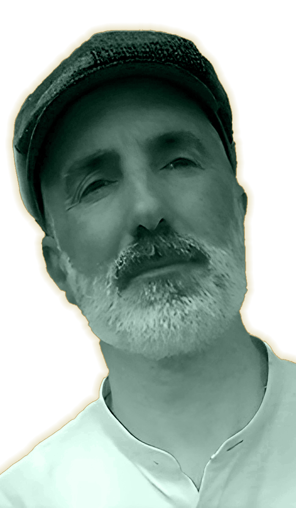
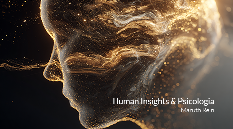
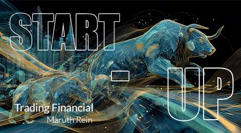

Chi Sono
Otto passaggi per comprendere il mio valore professionale.
Visual & Verbal Specialist Integrato
Opero all’intersezione tra dimensione visiva e architettura narrativa.
Progetto e coordino ecosistemi comunicativi integrati,
in cui identità visuale e costruzione del messaggio lavorano in modo coerente e strategico.
Integro competenze di Graphic & Web Design e
Copywriting con una solida struttura imprenditoriale,
consolidata attraverso il percorso “Dall'Idea al Mercato”
presso l'Università Ca' Foscari.
L’obiettivo è trasformare la creatività in sistemi comunicativi esteticamente rigorosi e
strategicamente sostenibili.
Background: Human Insight & Psicologia
Il mio approccio strategico è arricchito da una lunga ricerca sulla natura umana e sui processi di costruzione dell’identità.
Ho integrato lo studio della filosofia e delle tradizioni culturali con la psicologia analitica, approfondendo il pensiero di
Carl Gustav Jung
e della Psicosintesi.
Questa base mi permette di comprendere le dinamiche identitarie, simboliche e archetipiche che influenzano la percezione e il comportamento.
Nei progetti di comunicazione applico questa sensibilità alla costruzione di narrative profonde e coerenti, capaci di generare risonanza oltre il dato superficiale e di dare forma a identità riconoscibili e autentiche.

Formazione Continua: Digital Strategy & AI Integration
Per coniugare intuizione e metodo, ho strutturato le mie competenze attraverso percorsi di aggiornamento universitari e una costante evoluzione tecnologica.
Presso l'Università di Milano-Bicocca ho approfondito la Comunicazione Web e i Linguaggi dei Nuovi Media, applicando i principi dell'Information Design e del Multimedia Learning.
Oggi integro in modo professionale strumenti di Intelligenza Artificiale — sia linguistici che visivi e video — come leve strategiche per analisi, prototipazione, generazione di concept e ottimizzazione dei workflow creativi.
L'AI non sostituisce la visione, ma la potenzia: accelera i processi, amplia le possibilità espressive e permette di trasformare l'intuizione in strategie misurabili e scalabili.
Le Radici del Design: Il Master
La mia visione poggia su fondamenta tecniche solide. Un Master biennale in Grafica Pubblicitaria, Illustrazione e Storytelling
(Bologna, 1997–1999) mi ha fornito una comprensione strutturale della composizione visiva, della psicologia del colore,
della narrazione e dello storyboard cinematografico.
Questa base accademica non è solo un punto di partenza, ma il framework attraverso cui interpreto e utilizzo strumenti
contemporanei come Adobe Creative Suite e Figma, progettando sistemi visivi coerenti e consapevoli,
dove forma, ritmo e significato operano in modo integrato.

Autore e Divulgatore
La mia capacità narrativa è documentabile attraverso un ecosistema letterario che spazia dalla saggistica tecnica al romanzo di formazione. Ho curato l'intero ciclo editoriale di opere fondamentali come Il Fuoco Fresco (energia), L'Ombra (psicologia), Dal Sonno alla Presenza (consapevolezza) e Il Silenzio che Guarisce (metafisica). La qualità di questa produzione è validata esternamente: il mio ultimo romanzo è attualmente in concorso al prestigioso Premio Letterario Italo Calvino. Questa produzione testimonia la mia capacità di gestire progetti narrativi complessi con disciplina, coerenza e profondità stilistica.

Track Record: Community & Engagement
Oltre all’attività editoriale, ho sviluppato e consolidato un ecosistema digitale proprietario.
Come ideatore del progetto "The Guru", ho costruito una community organica di oltre
40.000 follower su Facebook, definendo concept, tono di voce e identità visiva.
Il progetto dimostra la mia capacità di adattare la profondità narrativa a linguaggi sintetici e ad alta
frequenza, analizzando metriche e dinamiche di engagement per favorire una crescita coerente e sostenibile del brand.

Il Valore per l'Azienda
Porto in azienda un' integrazione strutturata tra visione strategica, profondità analitica e competenza operativa. Il mio percorso integra comprensione delle dinamiche umane,
metodo strutturato e cultura visuale, permettendomi di progettare sistemi comunicativi coerenti
e orientati agli obiettivi.
In team dialogo efficacemente con sviluppatori, designer e stakeholder, coordinando visione e execution.
Questo approccio consente di elevare la comunicazione aziendale trasformandola da produzione di contenuti
a ecosistema strategico integrato.

Start-Up Founder: Business Building & Strategy
La visione organizzativa e imprenditoriale sviluppata nel mio percorso personale mi ha portato a realizzare e co-fondare una Start-Up finanziaria, divenuta punto di riferimento nazionale. Grazie a strategie mirate di brand positioning e partnership internazionali, il progetto ha ottenuto riconoscimenti da testate come CNBC, Milano Finanza e Trading Magazine. L'esperienza diretta nella costruzione di un ecosistema di business scalabile mi ha insegnato a unire creatività, strategia ed execution. Oggi applico questo stesso approccio sistemico e orientato alla scalabilità nei progetti di comunicazione strategica.
